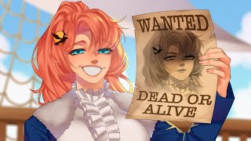
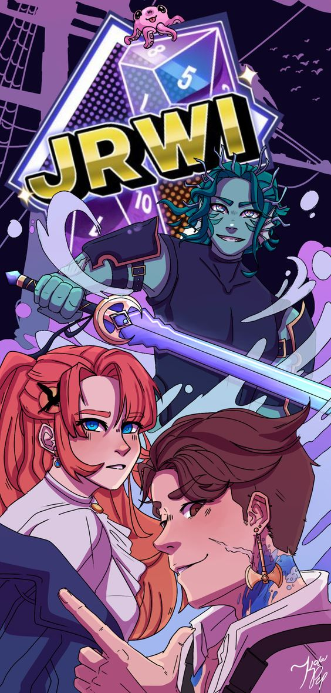

The Riptide Campaign
The defenition of a Riptide is an extremley strong unpredictable curent that flows against others. You've probably heard the dangers of Riptides and how they'll just--- pull you in. This Riptide is no different. Join our... Heros(?) Gillion, Chip, and Jay on their journeys across the world of Mana.

Our Journey
Our journey begins as any good stories do- in the middle of nowhere in the ocean. Novice pirates Chip and Jay find one Gillion Tidestrider floating atop the waves and pull him aboard, thus banding the Riptide Pirates. Our trio of confused pirates find themselves navigating tough waters and even tougher calls, intertwining their fates with the mysterious, master of desire, Niklaus Hendrix. From humble beginnings our pirates journey further digging up treasure, new crewmates, and secrets that thrust them further down an unknown path. With the weight of every sad town they help, every navy base they raid and capture they evade- with every mystery they unveil our heroes fall further and further down a dark hole. Despite the odds our three heroes, from completely different worlds, collide to save each other and the world as a whole. But of course, every good hero has some baggage, how else would you keep it interesting?
Chip
Chip "Bastard" Rose(?), one of the three captains of the Riptide pirates and the original Riptide Pirate. With little memory of his past, Chip in a bit of an enigma, but a skilled pirate. Being raised on a pirate ship for a good part of his childhood- and not just any pirate ship- The Black Rose Pirates, some of the best of the best- will do that. Chip was taken for the Black Rose at a young age by the Hole in the sea, that took his captain, most of his crewmates, and his best friend. Now, hell-bent on living up to the memory of his mentor and saving his hold crew, Chip is haunted by the fate handed down to him from the Black Rose. Chip lived here and there for most of his life after the Black Rose, getting into all kinds of things to stay alive, many of which things have contributed to his lack of memory. After meeting Jay, Chip banded together the Riptide Pirates to begin his quest to be the best pirate he could, and to find his lost friends. Through his journey chip changes quite a bit- most for the better- and finds that there and new friends to go on for.
Gillion
Gillion "Destiny" Tidestrider, the disgraced prophecy child of the undersea. Gillion spent most of his life away from almost everyone including his family being trained as the prophesied champion of the Undersea, a title thrust upon him since birth. With his head being filled with delusions of grandeur and his days occupied with nonstop training, Gillion did become the undersea’s greatest warrior- but not the smartest. After years of training and preparation, Gillion made the mistake of speaking out of turn to foreign general visiting the Undersea. Or- rather I should say, Gillion made the mistake of attacking the visiting general, causing him to be banished from the Undersea for his crime and putting the Undersea at risk. It was after this that Gillion was found floating atop the ocean by his soon to be crewmates Chip and Jay. Struggling with figuring out who his is, who he's meant to be, and who he's been trained to be Gillion carves his own path with the Riptide pirates in a quest to figure out what he's fighting for.
Jay
Jay Ferrin "the navigator", Daughter of General Jayson Ferrin, and current Navy run away. Jay was the second to join the Riptide pirates after Chip picked her up from the island she was bound to with her mother. With aspirations for adventure and a yearn for the open sea (accompanied by some possible spy work) Jay achieved becoming a pirate despite her strict non-pirate Navy upbringing. Being an extraordinary builder and the daughter of an extremely powerful family, it's no wonder Jay finds herself as one of the Riptide captains. Though her loyalties may have been questionable, Jay found purpose and drive on the sea she didn't think she'd find. And not only that, but she also found a family. By seeing what the Navy had done to the world and learning that she could do more good, Jay gained a new drive to take down her father and the Navy, leaving no questions as to where her loyalties lie. Jay is the center of intel on the ship most of the time, as well as usually being the only one that has any sense.
This page is (100% not) sponsored by the JRWI Patrion! Go check it out :) (next page>>>)
Remeber-- JUST ROLL WITH IT! :)